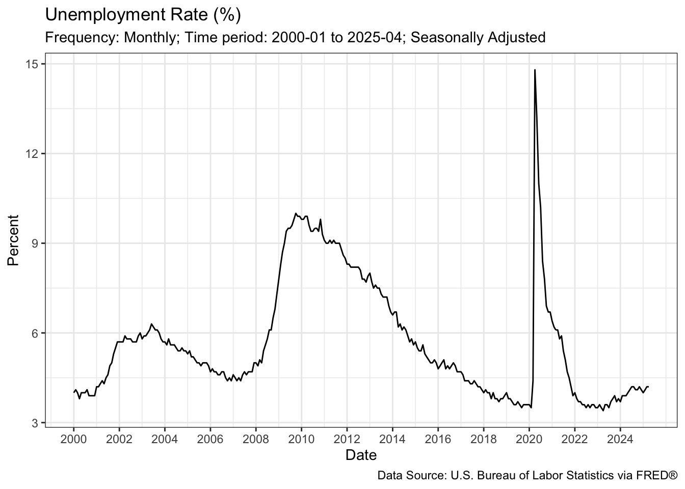
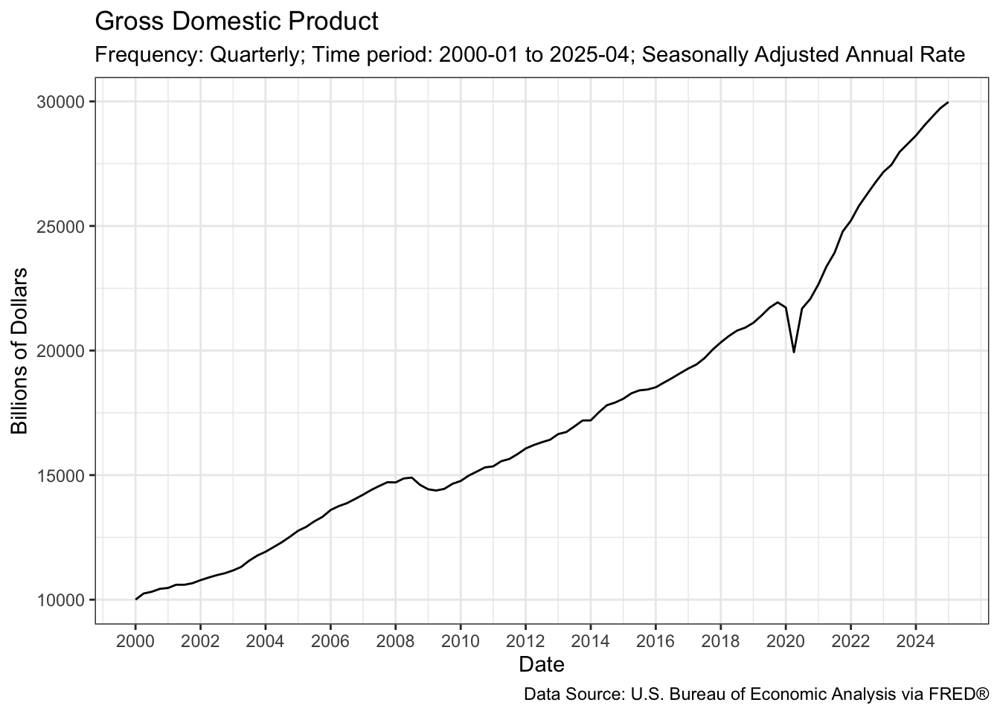
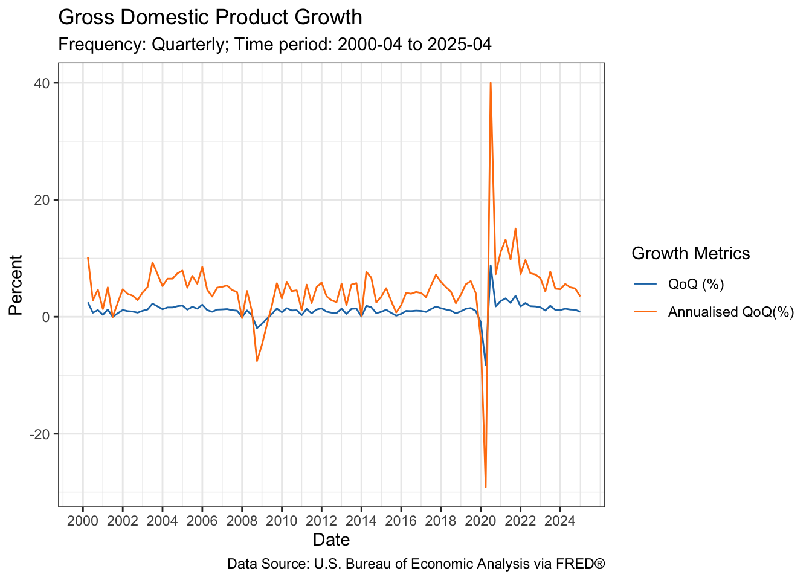
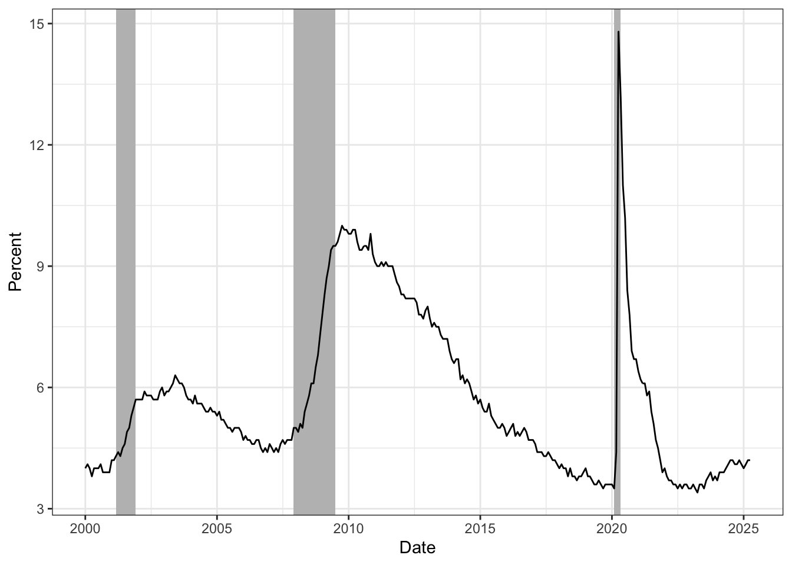
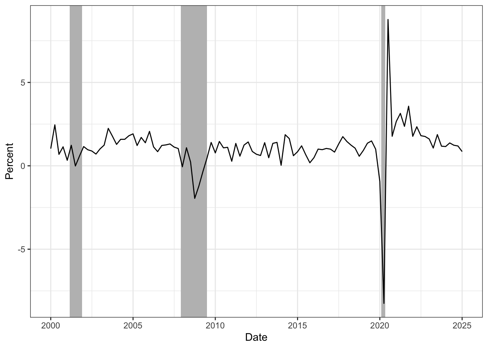
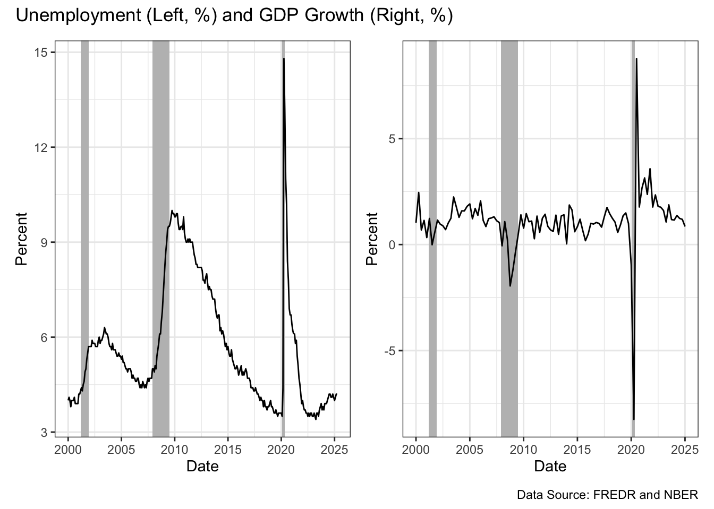

library(tidyverse)
library(fredr)
library(tibble)
my_key <- Sys.getenv("api_key")
fredr_set_key(my_key)PS1_FREDR
Exercise 1: Getting familiar with the FRED API
Install the fredr package and load the library; Set API key
get access to GDP quarterly data from 1947
fredr(series_id = "GDP")# A tibble: 317 × 5
date series_id value realtime_start realtime_end
<date> <chr> <dbl> <date> <date>
1 1946-01-01 GDP NA 2025-04-30 2025-04-30
2 1946-04-01 GDP NA 2025-04-30 2025-04-30
3 1946-07-01 GDP NA 2025-04-30 2025-04-30
4 1946-10-01 GDP NA 2025-04-30 2025-04-30
5 1947-01-01 GDP 243. 2025-04-30 2025-04-30
6 1947-04-01 GDP 246. 2025-04-30 2025-04-30
7 1947-07-01 GDP 250. 2025-04-30 2025-04-30
8 1947-10-01 GDP 260. 2025-04-30 2025-04-30
9 1948-01-01 GDP 266. 2025-04-30 2025-04-30
10 1948-04-01 GDP 273. 2025-04-30 2025-04-30
# ℹ 307 more rowsModify the API call to retrieve quarterly GDP data from January 01, 2000, and save it in a tibble called gdp.
gdp <- fredr(series_id = "GDP",
observation_start = as.Date("2000-01-01"))Find out what other time series fredr has
fredr_category_children(category_id = 0)# A tibble: 8 × 3
id name parent_id
<int> <chr> <int>
1 32991 Money, Banking, & Finance 0
2 10 Population, Employment, & Labor Markets 0
3 32992 National Accounts 0
4 1 Production & Business Activity 0
5 32455 Prices 0
6 32263 International Data 0
7 3008 U.S. Regional Data 0
8 33060 Academic Data 0Retrieve unemployment rates
fredr_series_search_text("unemployment")# A tibble: 1,000 × 16
id realtime_start realtime_end title observation_start observation_end
<chr> <chr> <chr> <chr> <chr> <chr>
1 UNRATE 2025-05-07 2025-05-07 Unem… 1948-01-01 2025-04-01
2 UNRATENSA 2025-05-07 2025-05-07 Unem… 1948-01-01 2025-04-01
3 UNEMPLOY 2025-05-07 2025-05-07 Unem… 1948-01-01 2025-04-01
4 NROU 2025-05-07 2025-05-07 Nonc… 1949-01-01 2035-10-01
5 CCSA 2025-05-07 2025-05-07 Cont… 1967-01-07 2025-04-19
6 CCNSA 2025-05-07 2025-05-07 Cont… 1967-01-07 2025-04-19
7 LNS14000… 2025-05-07 2025-05-07 Unem… 1972-01-01 2025-04-01
8 LNU03000… 2025-05-07 2025-05-07 Unem… 1948-01-01 2025-04-01
9 LNU04000… 2025-05-07 2025-05-07 Unem… 1972-01-01 2025-04-01
10 U6RATE 2025-05-07 2025-05-07 Tota… 1994-01-01 2025-04-01
# ℹ 990 more rows
# ℹ 10 more variables: frequency <chr>, frequency_short <chr>, units <chr>,
# units_short <chr>, seasonal_adjustment <chr>,
# seasonal_adjustment_short <chr>, last_updated <chr>, popularity <int>,
# group_popularity <int>, notes <chr>u <- fredr(series_id = "UNRATE", observation_start = as.Date("2000-01-01"))
u# A tibble: 304 × 5
date series_id value realtime_start realtime_end
<date> <chr> <dbl> <date> <date>
1 2000-01-01 UNRATE 4 2025-05-02 2025-05-02
2 2000-02-01 UNRATE 4.1 2025-05-02 2025-05-02
3 2000-03-01 UNRATE 4 2025-05-02 2025-05-02
4 2000-04-01 UNRATE 3.8 2025-05-02 2025-05-02
5 2000-05-01 UNRATE 4 2025-05-02 2025-05-02
6 2000-06-01 UNRATE 4 2025-05-02 2025-05-02
7 2000-07-01 UNRATE 4 2025-05-02 2025-05-02
8 2000-08-01 UNRATE 4.1 2025-05-02 2025-05-02
9 2000-09-01 UNRATE 3.9 2025-05-02 2025-05-02
10 2000-10-01 UNRATE 3.9 2025-05-02 2025-05-02
# ℹ 294 more rowsExercise 2: Plotting macroeconomic patterns
a. Plot the monthly unemployment rates stored in u using ggplot2
u |>
ggplot(aes(x = date, y = value)) +
geom_line() +
scale_x_date(
breaks = seq(as.Date("2000-01-01"), as.Date("2025-01-01"), by = "2 years"),
date_labels = "%Y"
)+
xlab("Date") +
ylab("Percent")+
labs(title = "Unemployment Rate (%)",
subtitle = "Frequency: Monthly; Time period: 2000-01 to 2025-04; Seasonally Adjusted",
caption = "Data Source: U.S. Bureau of Labor Statistics via FRED®") +
theme_bw()
b. Description of unemployment rates change during the business cycles.
Unemployment rates increase significantly during recessions. In 2001, it increased from around 4% to 6%. In 2008, it increased from 5% to around 10%. During the Covid-19 recession in 2020, it increased sharply from 3% to around 15%.Unemployment then decreases during economic recoveries and economic booms, as shown by the downward trend after each recession.
c. GDP Plot
gdp |>
ggplot(aes(x = date, y = value)) +
geom_line() +
scale_x_date(
breaks = seq(as.Date("2000-01-01"), as.Date("2025-01-01"), by = "2 years"),
date_labels = "%Y"
)+
xlab("Date") +
ylab("Billions of Dollars") +
labs(title = "Gross Domestic Product",
subtitle =
"Frequency: Quarterly; Time period: 2000-01 to 2025-04; Seasonally Adjusted Annual Rate",
caption = "Data Source: U.S. Bureau of Economic Analysis via FRED®") +
theme_bw()
d. Create quarter-over-quarter growth and annualised QoQ for plotting GDP growth
gdp <- gdp |>
mutate(qoq = ((value - lag(value))/lag(value)),
qoq_annualised = (1 + qoq )^4 - 1, # as if the qoq growth continues for a year, what would be the resulting annual growth rate
qoq = qoq*100,
qoq_annualised = qoq_annualised*100)We do not have a previous period for the first observation of this dataset (2000-01-01). Therefore, for the first period, we do not obtain a quarter-over-quarter growth and the values are missing.
e. Plot both measures of quarterly growth in the same plot
gdp |>
ggplot(aes(x = date)) +
geom_line(aes(y = qoq, color = "qoq")) +
geom_line(aes(y = qoq_annualised, color = "qoq_annualised"))+
scale_x_date(
breaks = seq(as.Date("2000-01-01"), as.Date("2025-01-01"), by = "2 years"),
date_labels = "%Y"
)+
xlab("Date") +
ylab("Percent")+
labs(title = "Gross Domestic Product Growth",
subtitle = "Frequency: Quarterly; Time period: 2000-04 to 2025-04",
caption = "Data Source: U.S. Bureau of Economic Analysis via FRED®") +
scale_color_manual(name = "Growth Metrics",
values = c("qoq" = "#1f77b4",
"qoq_annualised" = "#ff7f0e"),
labels = c("qoq" = "QoQ (%)",
"qoq_annualised" = "Annualised QoQ(%)"))+
theme_bw()Warning: Removed 1 row containing missing values or values outside the scale range
(`geom_line()`).
Removed 1 row containing missing values or values outside the scale range
(`geom_line()`).
f. Pull QoQ growth from FRED API directly and fix the missing values
gdp_growth <- fredr(series_id = "GDP", units = "pch", observation_start = as.Date("2000-01-01"))
gdp_growth# A tibble: 101 × 5
date series_id value realtime_start realtime_end
<date> <chr> <dbl> <date> <date>
1 2000-01-01 GDP 1.03 2025-05-01 2025-05-01
2 2000-04-01 GDP 2.45 2025-05-01 2025-05-01
3 2000-07-01 GDP 0.687 2025-05-01 2025-05-01
4 2000-10-01 GDP 1.14 2025-05-01 2025-05-01
5 2001-01-01 GDP 0.330 2025-05-01 2025-05-01
6 2001-04-01 GDP 1.23 2025-05-01 2025-05-01
7 2001-07-01 GDP -0.00925 2025-05-01 2025-05-01
8 2001-10-01 GDP 0.589 2025-05-01 2025-05-01
9 2002-01-01 GDP 1.15 2025-05-01 2025-05-01
10 2002-04-01 GDP 0.964 2025-05-01 2025-05-01
# ℹ 91 more rowsThe quarterly growths rates match to my qoq variable.
gdp$qoq[1] <- gdp_growth$value[1]
gdp$qoq_annualised[1] <- ((1+gdp$qoq[1]*0.01)^4 - 1)*100
gdp# A tibble: 101 × 7
date series_id value realtime_start realtime_end qoq
<date> <chr> <dbl> <date> <date> <dbl>
1 2000-01-01 GDP 10002. 2025-05-02 2025-05-02 1.03
2 2000-04-01 GDP 10248. 2025-05-02 2025-05-02 2.45
3 2000-07-01 GDP 10318. 2025-05-02 2025-05-02 0.687
4 2000-10-01 GDP 10436. 2025-05-02 2025-05-02 1.14
5 2001-01-01 GDP 10470. 2025-05-02 2025-05-02 0.330
6 2001-04-01 GDP 10599 2025-05-02 2025-05-02 1.23
7 2001-07-01 GDP 10598. 2025-05-02 2025-05-02 -0.00925
8 2001-10-01 GDP 10660. 2025-05-02 2025-05-02 0.589
9 2002-01-01 GDP 10784. 2025-05-02 2025-05-02 1.15
10 2002-04-01 GDP 10887. 2025-05-02 2025-05-02 0.964
# ℹ 91 more rows
# ℹ 1 more variable: qoq_annualised <dbl>Exercise 3: Spotting recessions
recessions <- tibble(
start = as.Date(c("2001-03-01", "2007-12-01", "2020-02-01")),
end = as.Date(c("2001-11-30", "2009-06-30", "2020-04-30"))
)a. Plot unemployment rates and add shading for recession periods
uplot <- u |>
ggplot(aes(x = date, y = value)) +
geom_rect(
data = recessions,
aes(xmin = start, xmax = end, ymin = -Inf, ymax = Inf),
fill = "grey",
inherit.aes = FALSE) +
geom_line() +
scale_x_date(
breaks = seq(as.Date("2000-01-01"),
as.Date("2025-01-01"),
by = "5 years"),
date_labels = "%Y"
)+
xlab("Date") +
ylab("Percent")+
theme_bw()
uplot
b. Plot QoQ GDP growth with recession shading using geom_rect()
gdp_growth_plot <- gdp_growth |>
ggplot(aes(x = date, y = value)) +
geom_rect(
data = recessions,
aes(xmin = start, xmax = end, ymin = -Inf, ymax = Inf), # Inf / -Inf to cover the whole column
fill = "grey", # use grey color
inherit.aes = FALSE) +
geom_line() +
scale_x_date(
breaks = seq(as.Date("2000-01-01"),
as.Date("2025-01-01"), by = "5 years"),
date_labels = "%Y"
)+
xlab("Date") +
ylab("Percent")+
theme_bw()
gdp_growth_plot
c. Combine the plots next to each other
library(patchwork)
uplot + gdp_growth_plot+
plot_annotation(title = "Unemployment (Left, %) and GDP Growth (Right, %)",
caption = "Data Source: FREDR and NBER")